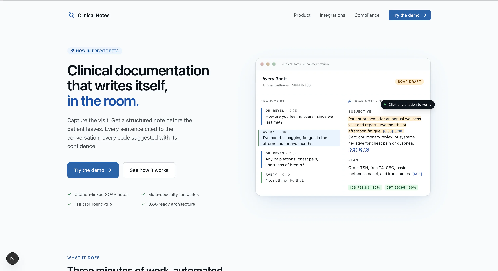
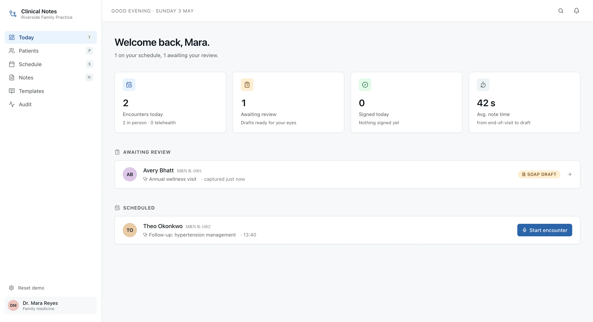

<meta charset="utf-8">
<meta name="viewport" content="width=device-width, initial-scale=1">
<title>AI Clinical Notes — Medical Scribe that Writes SOAP Notes Automatically</title>
<meta name="description" content="An AI medical scribe that listens to consultations and writes cited SOAP notes in seconds, cutting documentation time by 80%. Healthcare AI built by BuildspaceLabs.">
<link rel="canonical" href="https://buildpacelabs.github.io/buildspace-landings/sanad/">
<meta name="robots" content="index,follow">
<meta name="theme-color" content="#0EA5E9">

<meta property="og:type" content="website">
<meta property="og:site_name" content="BuildspaceLabs">
<meta property="og:title" content="AI Clinical Notes — Medical Scribe that Writes SOAP Notes Automatically">
<meta property="og:description" content="An AI medical scribe that listens to consultations and writes cited SOAP notes in seconds, cutting documentation time by 80%.">
<meta property="og:url" content="https://buildpacelabs.github.io/buildspace-landings/sanad/">
<meta property="og:image" content="https://buildpacelabs.github.io/buildspace-landings/sanad/assets/dashboard.webp">
<meta property="og:image:alt" content="AI Clinical Notes dashboard showing encounters, drafts and the daily schedule">

<meta name="twitter:card" content="summary_large_image">
<meta name="twitter:title" content="AI Clinical Notes — Medical Scribe that Writes SOAP Notes Automatically">
<meta name="twitter:description" content="An AI medical scribe that listens to consultations and writes cited SOAP notes in seconds, cutting documentation time by 80%.">
<meta name="twitter:image" content="https://buildpacelabs.github.io/buildspace-landings/sanad/assets/dashboard.webp">

<link rel="icon" href="data:image/svg+xml,%3Csvg xmlns='http://www.w3.org/2000/svg' viewBox='0 0 32 32'%3E%3Crect width='32' height='32' rx='8' fill='%230EA5E9'/%3E%3Cpath d='M6 16h3l2-6 3 12 3-9 2 5h7' fill='none' stroke='white' stroke-width='2.4' stroke-linecap='round' stroke-linejoin='round'/%3E%3C/svg%3E">

<link rel="preconnect" href="https://fonts.googleapis.com">
<link rel="preconnect" href="https://fonts.gstatic.com" crossorigin>
<link href="https://fonts.googleapis.com/css2?family=Manrope:wght@500;600;700;800&family=Inter:wght@400;500;600&display=swap" rel="stylesheet">
<link rel="stylesheet" href="styles.css">

<script type="application/ld+json">
{
  "@context": "https://schema.org",
  "@type": "SoftwareApplication",
  "name": "AI Clinical Notes",
  "description": "An AI-powered medical scribe that listens to doctor–patient conversations and writes cited SOAP notes automatically, cutting documentation time by 80%.",
  "applicationCategory": "HealthApplication",
  "operatingSystem": "Web",
  "creator": {
    "@type": "Organization",
    "name": "BuildspaceLabs",
    "url": "https://buildspacelabs.com"
  }
}
</script>

<header class="site-header" id="siteHeader">
  <div class="wrap nav">
    <a class="brand" href="index.html" aria-label="AI Clinical Notes home">
      <span class="mark" aria-hidden="true">
        <svg viewBox="0 0 24 24" fill="none"><path d="M3 12h3l2-6 3 12 3-9 2 5h5" stroke="white" stroke-width="2" stroke-linecap="round" stroke-linejoin="round"/></svg>
      </span>
      AI Clinical Notes
    </a>
    <nav class="nav-links" aria-label="Primary">
      <a href="#how">How it works</a>
      <a href="#cited">Citations</a>
      <a href="#tour">Product</a>
      <a href="#features">Features</a>
    </nav>
    <div class="nav-right">
      <a class="built-by" href="https://buildspacelabs.com" target="_blank" rel="noopener">
        Built by BuildspaceLabs
        <svg viewBox="0 0 24 24" fill="none"><path d="M7 17 17 7M9 7h8v8" stroke="currentColor" stroke-width="2" stroke-linecap="round" stroke-linejoin="round"/></svg>
      </a>
      <a class="btn btn-primary" href="https://buildspacelabs.com/contact-us" target="_blank" rel="noopener">Book a demo</a>
    </div>
  </div>
</header>

<main>
  <!-- HERO -->
  <section class="hero" aria-labelledby="hero-title">
    <div class="wrap hero-grid">
      <div class="hero-copy">
        <span class="hero-badge">
          <span class="pill">Healthcare AI</span>
          The AI medical scribe
        </span>
        <h1 id="hero-title">The notes write themselves — <span class="accent">so the doctor can look up.</span></h1>
        <p class="hero-sub">AI Clinical Notes listens to the consultation, understands the medical context, and writes a ready-to-use SOAP note in seconds. Every sentence traceable back to what was actually said.</p>
        <div class="hero-cta">
          <a class="btn btn-primary btn-lg" href="https://buildspacelabs.com/contact-us" target="_blank" rel="noopener">
            Book a demo
            <svg viewBox="0 0 24 24" fill="none"><path d="M5 12h14M13 6l6 6-6 6" stroke="currentColor" stroke-width="2" stroke-linecap="round" stroke-linejoin="round"/></svg>
          </a>
          <a class="btn btn-ghost btn-lg" href="#how">See how it works</a>
        </div>
        <div class="hero-assure">
          <span><svg viewBox="0 0 24 24" fill="none"><path d="M20 6 9 17l-5-5" stroke="currentColor" stroke-width="2.4" stroke-linecap="round" stroke-linejoin="round"/></svg>Hands-free in the room</span>
          <span><svg viewBox="0 0 24 24" fill="none"><path d="M20 6 9 17l-5-5" stroke="currentColor" stroke-width="2.4" stroke-linecap="round" stroke-linejoin="round"/></svg>Secure &amp; compliant by design</span>
          <span><svg viewBox="0 0 24 24" fill="none"><path d="M20 6 9 17l-5-5" stroke="currentColor" stroke-width="2.4" stroke-linecap="round" stroke-linejoin="round"/></svg>Cited to the conversation</span>
        </div>
      </div>

      <!-- Signature visual: waveform -> SOAP note -->
      <div class="scribe" id="scribe" aria-label="Illustration: a live consultation waveform resolving into a structured, cited SOAP note">
        <div class="scribe-top">
          <span class="rec-dot" aria-hidden="true"></span>
          <span class="lbl">Listening to consultation</span>
          <span class="who">2 speakers</span>
        </div>
        <div class="wave" id="wave" aria-hidden="true"></div>
        <div class="soap" id="soap">
          <div class="soap-line" data-i="0">
            <span class="soap-tag s">S</span>
            <div class="soap-body"><p class="txt"><b>Subjective:</b> Patient reports a persistent dry cough for 5 days, worse at night.
              <span class="cite"><svg viewBox="0 0 24 24" fill="none"><path d="M9 15l6-6M8 13l-2 2a3 3 0 004 4l2-2M16 11l2-2a3 3 0 00-4-4l-2 2" stroke="currentColor" stroke-width="2" stroke-linecap="round" stroke-linejoin="round"/></svg>00:42</span>
            </p></div>
          </div>
          <div class="soap-line" data-i="1">
            <span class="soap-tag o">O</span>
            <div class="soap-body"><p class="txt"><b>Objective:</b> Temp 37.1°C, chest clear on auscultation, no respiratory distress.
              <span class="cite"><svg viewBox="0 0 24 24" fill="none"><path d="M9 15l6-6M8 13l-2 2a3 3 0 004 4l2-2M16 11l2-2a3 3 0 00-4-4l-2 2" stroke="currentColor" stroke-width="2" stroke-linecap="round" stroke-linejoin="round"/></svg>02:15</span>
            </p></div>
          </div>
          <div class="soap-line" data-i="2">
            <span class="soap-tag a">A</span>
            <div class="soap-body"><p class="txt"><b>Assessment:</b> Likely post-viral cough; low suspicion of lower respiratory infection.
              <span class="cite"><svg viewBox="0 0 24 24" fill="none"><path d="M9 15l6-6M8 13l-2 2a3 3 0 004 4l2-2M16 11l2-2a3 3 0 00-4-4l-2 2" stroke="currentColor" stroke-width="2" stroke-linecap="round" stroke-linejoin="round"/></svg>03:48</span>
            </p></div>
          </div>
          <div class="soap-line" data-i="3">
            <span class="soap-tag p">P</span>
            <div class="soap-body"><p class="txt"><b>Plan:</b> Supportive care, hydration, review in 7 days if symptoms persist.
              <span class="cite"><svg viewBox="0 0 24 24" fill="none"><path d="M9 15l6-6M8 13l-2 2a3 3 0 004 4l2-2M16 11l2-2a3 3 0 00-4-4l-2 2" stroke="currentColor" stroke-width="2" stroke-linecap="round" stroke-linejoin="round"/></svg>05:03</span>
            </p></div>
          </div>
        </div>
      </div>
    </div>
  </section>

  <!-- TRUST BAND -->
  <section class="trust" aria-label="Key outcomes">
    <div class="wrap">
      <div class="trust-grid">
        <div class="trust-cell reveal">
          <div class="trust-num" data-count="80" data-suffix="%">0<span class="u">%</span></div>
          <p class="trust-lbl">less documentation time per encounter</p>
        </div>
        <div class="trust-cell reveal d1">
          <div class="trust-num">Instant</div>
          <p class="trust-lbl">structured SOAP notes generated in seconds</p>
        </div>
        <div class="trust-cell reveal d2">
          <div class="trust-num">Every&nbsp;line</div>
          <p class="trust-lbl">cited straight back to the conversation</p>
        </div>
      </div>
    </div>
  </section>

  <!-- IN THE ROOM -->
  <section class="section-pad" id="how" aria-labelledby="how-title">
    <div class="wrap">
      <div class="section-head center reveal">
        <span class="eyebrow">In the room</span>
        <h2 id="how-title">Three steps, and the note is done</h2>
        <p class="lead">No dictation, no typing between patients, no catching up after hours. The scribe works the way a consultation actually flows.</p>
      </div>
      <div class="steps">
        <article class="step reveal">
          <span class="step-n" aria-hidden="true"></span>
          <div class="step-ico">
            <svg viewBox="0 0 24 24" fill="none"><path d="M12 3a3 3 0 0 0-3 3v6a3 3 0 0 0 6 0V6a3 3 0 0 0-3-3Z" stroke="currentColor" stroke-width="1.8"/><path d="M5 11a7 7 0 0 0 14 0M12 18v3M8 21h8" stroke="currentColor" stroke-width="1.8" stroke-linecap="round"/></svg>
          </div>
          <h3>Listen</h3>
          <p>It runs quietly in the background, transcribing the doctor–patient conversation in real time with speaker identification — no headset, no interruptions.</p>
        </article>
        <article class="step reveal d1">
          <span class="step-n" aria-hidden="true"></span>
          <div class="step-ico">
            <svg viewBox="0 0 24 24" fill="none"><path d="M12 3a6 6 0 0 0-4 10.5V17h8v-3.5A6 6 0 0 0 12 3Z" stroke="currentColor" stroke-width="1.8" stroke-linejoin="round"/><path d="M9 20h6M10 22h4" stroke="currentColor" stroke-width="1.8" stroke-linecap="round"/></svg>
          </div>
          <h3>Understand</h3>
          <p>It reads medical context — symptoms, findings, reasoning — separating what the patient reports from what the clinician observes and decides.</p>
        </article>
        <article class="step reveal d2">
          <span class="step-n" aria-hidden="true"></span>
          <div class="step-ico">
            <svg viewBox="0 0 24 24" fill="none"><path d="M6 3h9l4 4v14H6z" stroke="currentColor" stroke-width="1.8" stroke-linejoin="round"/><path d="M14 3v5h5M9 13h6M9 17h4" stroke="currentColor" stroke-width="1.8" stroke-linecap="round" stroke-linejoin="round"/></svg>
          </div>
          <h3>Draft</h3>
          <p>It writes a clean, structured SOAP note in seconds — ready to review, sign and drop into your existing workflow before the patient leaves.</p>
        </article>
      </div>
    </div>
  </section>

  <!-- CITED -->
  <section class="section-pad cited-sec" id="cited" aria-labelledby="cited-title">
    <div class="wrap cited-grid">
      <div class="reveal">
        <span class="eyebrow">Traceable by design</span>
        <h2 class="section-head" style="margin-top:16px" id="cited-title">Every sentence is cited to what was actually said</h2>
        <p class="lead">A note you can't verify is a note you can't trust. AI Clinical Notes links each line back to the exact moment in the conversation — so review takes seconds and nothing is invented.</p>
        <div class="cited-list">
          <div class="cited-item">
            <span class="chk"><svg viewBox="0 0 24 24" fill="none"><path d="M20 6 9 17l-5-5" stroke="currentColor" stroke-width="2.6" stroke-linecap="round" stroke-linejoin="round"/></svg></span>
            <div><h4>Tap any line, hear the source</h4><p>Each SOAP entry carries a citation to the timestamp it came from — the clinician stays in control of what gets signed.</p></div>
          </div>
          <div class="cited-item">
            <span class="chk"><svg viewBox="0 0 24 24" fill="none"><path d="M20 6 9 17l-5-5" stroke="currentColor" stroke-width="2.6" stroke-linecap="round" stroke-linejoin="round"/></svg></span>
            <div><h4>Nothing invented, nothing guessed</h4><p>If it wasn't said in the room, it isn't in the note. Grounded generation keeps documentation honest and defensible.</p></div>
          </div>
          <div class="cited-item">
            <span class="chk"><svg viewBox="0 0 24 24" fill="none"><path d="M20 6 9 17l-5-5" stroke="currentColor" stroke-width="2.6" stroke-linecap="round" stroke-linejoin="round"/></svg></span>
            <div><h4>Built for compliance conversations</h4><p>Secure and compliant by design, with a clear audit trail from spoken word to signed record.</p></div>
          </div>
        </div>
      </div>
      <div class="trace reveal d2" aria-label="Example: a spoken sentence becoming a cited note line">
        <h5>From the conversation</h5>
        <div class="trace-quote">
          <span class="spk">Patient</span> — “I've had this dry cough for about five days now, and it's <mark>always worse at night</mark>.”
        </div>
        <div class="trace-flow" aria-hidden="true">
          <svg viewBox="0 0 24 24" fill="none"><path d="M12 4v16M6 14l6 6 6-6" stroke="currentColor" stroke-width="2" stroke-linecap="round" stroke-linejoin="round"/></svg>
        </div>
        <h5>In the SOAP note</h5>
        <div class="trace-out">
          <b style="font-family:var(--font-head)">Subjective:</b> Persistent dry cough for 5 days, <span class="cited-inline">worse at night</span>. <span class="cited-inline">cited · 00:42</span>
        </div>
      </div>
    </div>
  </section>

  <!-- PRODUCT TOUR -->
  <section class="section-pad" id="tour" aria-labelledby="tour-title">
    <div class="wrap">
      <div class="section-head center reveal">
        <span class="eyebrow">Product tour</span>
        <h2 id="tour-title">See it the way clinicians do</h2>
        <p class="lead">A draft you can trust and a workspace that fits the day — from the live encounter to the signed note.</p>
      </div>

      <div class="tour">
        <div class="shot">
          <div class="shot-copy reveal">
            <span class="kicker">The draft</span>
            <h3>A SOAP note you can trust at a glance</h3>
            <p>The generated draft arrives structured and complete, with every sentence carrying a citation chip back to the conversation. Skim, verify, sign — usually before the patient has left the room.</p>
            <ul>
              <li><svg viewBox="0 0 24 24" fill="none"><path d="M20 6 9 17l-5-5" stroke="currentColor" stroke-width="2.4" stroke-linecap="round" stroke-linejoin="round"/></svg>Clean Subjective / Objective / Assessment / Plan structure</li>
              <li><svg viewBox="0 0 24 24" fill="none"><path d="M20 6 9 17l-5-5" stroke="currentColor" stroke-width="2.4" stroke-linecap="round" stroke-linejoin="round"/></svg>Citation links on every line for fast review</li>
              <li><svg viewBox="0 0 24 24" fill="none"><path d="M20 6 9 17l-5-5" stroke="currentColor" stroke-width="2.4" stroke-linecap="round" stroke-linejoin="round"/></svg>Ready to edit, sign and export</li>
            </ul>
          </div>
          <figure class="reveal d2" style="margin:0">
            <div class="frame">
              <div class="frame-bar" aria-hidden="true">
                <span class="dot"></span><span class="dot"></span><span class="dot"></span>
                <span class="url"><svg viewBox="0 0 24 24" fill="none"><path d="M7 11V8a5 5 0 0 1 10 0v3M5 11h14v9H5z" stroke="currentColor" stroke-width="1.8" stroke-linejoin="round"/></svg>app.aiclinicalnotes.health / draft</span>
              </div>
              
            </div>
            <figcaption class="shot-cap">The cited SOAP draft — every sentence traceable back to the consultation.</figcaption>
          </figure>
        </div>

        <div class="shot rev">
          <div class="shot-copy reveal">
            <span class="kicker">The workspace</span>
            <h3>A dashboard built around the clinical day</h3>
            <p>Encounters, drafts and the daily schedule in one calm view. Pick up where a consultation left off, see what's waiting to be signed, and keep the day moving.</p>
            <ul>
              <li><svg viewBox="0 0 24 24" fill="none"><path d="M20 6 9 17l-5-5" stroke="currentColor" stroke-width="2.4" stroke-linecap="round" stroke-linejoin="round"/></svg>Encounters and drafts at a glance</li>
              <li><svg viewBox="0 0 24 24" fill="none"><path d="M20 6 9 17l-5-5" stroke="currentColor" stroke-width="2.4" stroke-linecap="round" stroke-linejoin="round"/></svg>The daily schedule alongside the notes</li>
              <li><svg viewBox="0 0 24 24" fill="none"><path d="M20 6 9 17l-5-5" stroke="currentColor" stroke-width="2.4" stroke-linecap="round" stroke-linejoin="round"/></svg>Fits into existing hospital workflows</li>
            </ul>
          </div>
          <figure class="reveal d2" style="margin:0">
            <div class="frame">
              <div class="frame-bar" aria-hidden="true">
                <span class="dot"></span><span class="dot"></span><span class="dot"></span>
                <span class="url"><svg viewBox="0 0 24 24" fill="none"><path d="M7 11V8a5 5 0 0 1 10 0v3M5 11h14v9H5z" stroke="currentColor" stroke-width="1.8" stroke-linejoin="round"/></svg>app.aiclinicalnotes.health / dashboard</span>
              </div>
              
            </div>
            <figcaption class="shot-cap">The clinical dashboard — encounters, drafts and the daily schedule together.</figcaption>
          </figure>
        </div>
      </div>
    </div>
  </section>

  <!-- FEATURES -->
  <section class="section-pad" id="features" style="background:var(--base);border-block:1px solid var(--hairline)" aria-labelledby="feat-title">
    <div class="wrap">
      <div class="section-head center reveal">
        <span class="eyebrow">Capabilities</span>
        <h2 id="feat-title">Everything a scribe should be</h2>
        <p class="lead">Purpose-built for real consultations across specialties — accurate, secure, and quietly out of the way.</p>
      </div>
      <div class="features">
        <article class="feat reveal">
          <div class="feat-ico"><svg viewBox="0 0 24 24" fill="none"><path d="M12 3a3 3 0 0 0-3 3v6a3 3 0 0 0 6 0V6a3 3 0 0 0-3-3Z" stroke="currentColor" stroke-width="1.8"/><path d="M5 11a7 7 0 0 0 14 0M12 18v3M8 21h8" stroke="currentColor" stroke-width="1.8" stroke-linecap="round"/></svg></div>
          <h3>Hands-free note-taking</h3>
          <p>Captures the consultation as it happens, with real-time transcription and speaker identification — no device to hold, no flow to break.</p>
        </article>
        <article class="feat reveal d1">
          <div class="feat-ico"><svg viewBox="0 0 24 24" fill="none"><circle cx="12" cy="12" r="9" stroke="currentColor" stroke-width="1.8"/><path d="M3 12h18M12 3a14 14 0 0 1 0 18M12 3a14 14 0 0 0 0 18" stroke="currentColor" stroke-width="1.5"/></svg></div>
          <h3>Specialties &amp; languages</h3>
          <p>Works across medical specialties and languages, adapting to the vocabulary and rhythm of each consultation.</p>
        </article>
        <article class="feat reveal d2">
          <div class="feat-ico"><svg viewBox="0 0 24 24" fill="none"><path d="M12 3l7 3v6c0 4.5-3 7.5-7 9-4-1.5-7-4.5-7-9V6l7-3Z" stroke="currentColor" stroke-width="1.8" stroke-linejoin="round"/><path d="M9 12l2 2 4-4" stroke="currentColor" stroke-width="2" stroke-linecap="round" stroke-linejoin="round"/></svg></div>
          <h3>Secure &amp; compliant</h3>
          <p>Built secure and compliant by design, with a clear, citable trail from spoken word to signed clinical record.</p>
        </article>
        <article class="feat reveal d3">
          <div class="feat-ico"><svg viewBox="0 0 24 24" fill="none"><path d="M4 7h16M4 12h16M4 17h10" stroke="currentColor" stroke-width="1.8" stroke-linecap="round"/><circle cx="18" cy="17" r="3" stroke="currentColor" stroke-width="1.8"/></svg></div>
          <h3>Fits your workflow</h3>
          <p>Integrates with existing hospital workflows, so notes land where clinicians already work instead of another disconnected tool.</p>
        </article>
      </div>
    </div>
  </section>

  <!-- CLINICIANS BAND -->
  <section class="section-pad" aria-labelledby="band-title">
    <div class="wrap">
      <div class="band reveal">
        <div class="band-inner">
          <div>
            <span class="eyebrow" style="color:#7DD3FC">Built for busy clinicians</span>
            <h2 id="band-title" style="margin-top:16px">Finish notes within the visit — not after hours</h2>
            <p>AI Clinical Notes was piloted across real clinical settings, giving doctors back the time documentation used to take and the attention it used to steal.</p>
            <div class="band-tags">
              <span class="tg">Internal medicine</span>
              <span class="tg">Paediatrics</span>
              <span class="tg">Orthopaedics</span>
            </div>
          </div>
          <div class="band-stat">
            <div class="row">
              <span class="ic"><svg viewBox="0 0 24 24" fill="none"><circle cx="12" cy="12" r="9" stroke="currentColor" stroke-width="1.8"/><path d="M12 7v5l3 2" stroke="currentColor" stroke-width="1.8" stroke-linecap="round" stroke-linejoin="round"/></svg></span>
              <div><b>80% less documentation time</b><span>per encounter, measured in pilot</span></div>
            </div>
            <div class="row">
              <span class="ic"><svg viewBox="0 0 24 24" fill="none"><path d="M13 2 4 14h7l-1 8 9-12h-7l1-8Z" stroke="currentColor" stroke-width="1.8" stroke-linejoin="round"/></svg></span>
              <div><b>Notes finished within the visit</b><span>not carried home into the evening</span></div>
            </div>
            <div class="row">
              <span class="ic"><svg viewBox="0 0 24 24" fill="none"><path d="M12 3l7 3v6c0 4.5-3 7.5-7 9-4-1.5-7-4.5-7-9V6l7-3Z" stroke="currentColor" stroke-width="1.8" stroke-linejoin="round"/></svg></span>
              <div><b>Piloted with a private hospital</b><span>across three specialties (under NDA)</span></div>
            </div>
          </div>
        </div>
      </div>
    </div>
  </section>

  <!-- TECH -->
  <section class="section-pad tech" aria-labelledby="tech-title">
    <div class="wrap">
      <div class="section-head center reveal">
        <span class="eyebrow" style="justify-content:center">Under the hood</span>
        <h2 id="tech-title">Serious engineering, quietly done</h2>
      </div>
      <div class="chips reveal d1">
        <span class="chip"><span class="dot"></span>Python</span>
        <span class="chip"><span class="dot"></span>Next.js</span>
        <span class="chip"><span class="dot"></span>OpenAI Whisper</span>
        <span class="chip"><span class="dot"></span>GPT-4</span>
        <span class="chip"><span class="dot"></span>PostgreSQL</span>
      </div>
      <p class="note reveal d2">Real-time transcription with Whisper, medical reasoning with GPT-4, and a grounded, cited documentation layer on top.</p>
    </div>
  </section>

  <!-- CTA -->
  <section class="section-pad cta-sec" aria-labelledby="cta-title">
    <div class="wrap">
      <div class="cta-card reveal">
        <span class="eyebrow" style="justify-content:center">Talk to the team</span>
        <h2 id="cta-title" style="margin-top:16px">Give your clinicians their evenings back</h2>
        <p>See AI Clinical Notes on a real consultation and find out how it fits your hospital's workflow.</p>
        <div class="cta-actions">
          <a class="btn btn-primary btn-lg" href="https://buildspacelabs.com/contact-us" target="_blank" rel="noopener">
            Book a demo
            <svg viewBox="0 0 24 24" fill="none"><path d="M5 12h14M13 6l6 6-6 6" stroke="currentColor" stroke-width="2" stroke-linecap="round" stroke-linejoin="round"/></svg>
          </a>
          <a class="btn btn-ghost btn-lg" href="contact.html">Talk to us</a>
        </div>
        <p class="cta-fine">Scoped to your setting — we'll walk you through it, no obligation.</p>
      </div>
    </div>
  </section>
</main>

<footer class="site-footer">
  <div class="wrap">
    <div class="footer-grid">
      <div class="footer-brand">
        <a class="brand" href="index.html">
          <span class="mark" aria-hidden="true"><svg viewBox="0 0 24 24" fill="none"><path d="M3 12h3l2-6 3 12 3-9 2 5h5" stroke="white" stroke-width="2" stroke-linecap="round" stroke-linejoin="round"/></svg></span>
          AI Clinical Notes
        </a>
        <p>An AI medical scribe that listens to consultations and writes cited SOAP notes automatically — so doctors focus on patients, not paperwork.</p>
      </div>
      <div class="footer-col">
        <h4>Product</h4>
        <a href="#how">How it works</a>
        <a href="#cited">Citations</a>
        <a href="#tour">Product tour</a>
        <a href="#features">Features</a>
      </div>
      <div class="footer-col">
        <h4>Company</h4>
        <a href="contact.html">Contact</a>
        <a href="https://buildspacelabs.com/contact-us" target="_blank" rel="noopener">Book a demo ↗</a>
        <a href="https://buildspacelabs.com" target="_blank" rel="noopener">BuildspaceLabs ↗</a>
        <a href="mailto:buildspacelabs@vruoom.com">buildspacelabs@vruoom.com</a>
      </div>
    </div>
    <div class="footer-bottom">
      <a class="footer-credit bs-lock" href="https://buildspacelabs.com" target="_blank" rel="noopener" aria-label="Designed and engineered by BuildspaceLabs">
        <span class="bs">{bs}</span>
        <span>Designed &amp; engineered by BuildspaceLabs</span>
      </a>
      <p class="footer-legal">We design and ship AI-native products like this one. &copy; 2026 BuildspaceLabs.</p>
    </div>
  </div>
</footer>

<script src="script.js"></script>
